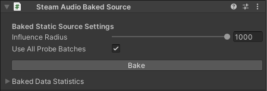

Steam Audio Baked Source¶
Marks the position and orientation of the object it’s attached to as a static source that can be used for baking reflections.
Can be attached to any GameObject.
- Influence Radius
Distance (in meters) within which a probe must lie for it to contain reflections data for this static source.
- Use All Probe Batches
If checked, reflections data for this static source will be baked into every probe batch in the scene, subject to the Influence Radius.
- Probe Batches
If Use All Probe Batches is not checked, this is a list of probe batches into which reflections data for this static source will be baked, subject to the Influence Radius.
- Bake
Starts baking reflections for this static source.
- Baked Data Statistics
Shows the size (in bytes) of baked reflections data stored for this static source in every probe batch.